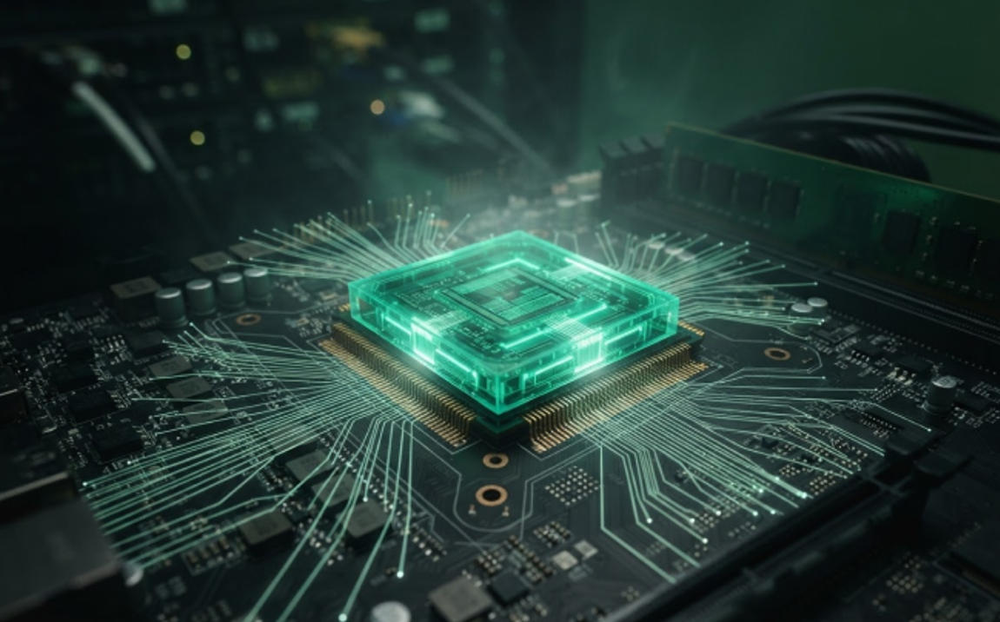

Наступна революція штучного інтелекту відбувається безпосередньо на вашому пристрої

Сучасні технології штучного інтелекту роблять великий крок убік від централізованих дата-центрів. Все більше розробників орієнтуються на локальне виконання нейромережевих моделей прямо на мобільних процесорах та персональних ПК.
Це вирішує дві ключові проблеми сучасного вебу: конфіденційність персональних даних та затримку відповіді (latency). Завдяки спеціалізованим NPU-блокам у нових чіпах, обробка тексту та зображень відбувається миттєво і без підключення до мережі Інтернет.
Обговорення та коментарі (3)
Чудова стаття! Локальний AI — це саме те, чого чекали для безпеки корпоративних даних.
Цікаво, як це вплине на енергоефективність батарей у ноутбуках при тривалому навантаженні.